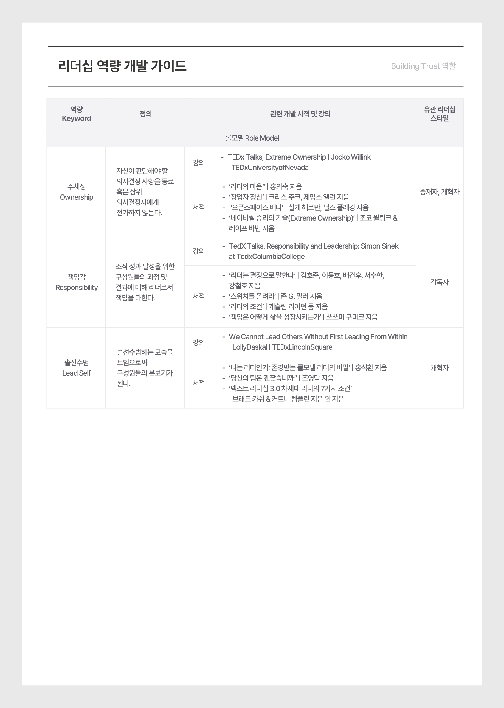

Summary 부서 조직문화 진단 결과
우리 부서 조직문화


부서 조직문화 특징과 적합한 리더십 스타일
- 공동체형 문화에서는 구성원들의 신뢰, 팀워크를 중시하며 개인의 능력개발에 대한 관심이 높습니다.
- 공동체형 문화에 적합한 리더십 스타일은 조언자/촉진자형으로 귀하의 리더십 스타일에 해당하지 않습니다.
- 담당 조직 조직문화에 부합하는 리더십 스타일 발현을 위해서는 하기의 조언자/촉진자형 역량 발현이 필요합니다.
arrow_right
역량에 관한 상세사항은 10페이지에 서술되어 있습니다.
| 조언자 | ||
| 경력비전제시 | 코칭/피드백 | |
| 동기부여 | 다양성존중 | |
| 경청/의사소통 | 인간 관계 형성/지원 | |
| 촉진자 | ||
| 동기부여 | 상호이해 | |
| 문제해결지원 | 갈등관리 | |
| 경청/의사소통 | 인간적 관계 형성/지원 | |
부서 조직문화 진단 영역 결과
- 점수가 가장 높은 4가지는 동료와의 관계, 커뮤니케이션, 후배와의 관계, 우리 부서 선호도입니다.
- 점수가 가장 낮은 3가지는 일하는 방식, 상사와의 관계, 조직만족입니다.
arrow_right
조직문화 유형, 연계 리더십 스타일, Top/Bottom 3 문항 선정은 반올림 처리하지 않은 값을 기준으로 하였습니다.
Summary 부서 조직문화 진단 결과
우리 부서 조직문화
강한 특성
- 타인과 협력하지 않고 의사결정을 하려는 권위주의적 성향과 규정을 위반한 타인을 능숙하게 시정하는 성향인 효과적인 준칙요구 특성 등이 나타납니다.
- 승진 선호가 강해 승진이 동기부여에 영향을 미치며 재무/비즈니스에 대한 흥미가 높습니다.
약한 특성
- 타인이 요령있게 대화하길 바라는 세련된 대화 선호 특질 등이 약하게 나타납니다.
- 탄력적 근무 선호가 약해 탄력적 근무가 동기부여에 영향을 미치지 않으며, 연구/학습에 대한 흥미가 낮습니다.
피해야 할 특질
- 발견되지 않았습니다.
|
강한 특성
결과값
|
|
| 특질 | |
|
권위주의적
(Effective Enforcing)
9.9
|
|
|
솔직한
(Frank)
9.6
|
|
|
유능한 리더 선호
(Wants Capable Leader)
9.5
|
|
|
세련된 진솔함
(Forthright Diplomacy)
9.4
|
|
|
참여유도형 권위주장
(Authoritative Collaboration)
9.4
|
|
| 행동특성 |
효과적인 준칙요구
(Effective Enforcing)
9.2
|
| 동기부여 |
승진선호
(Wants Advancement)
10.0
|
| 흥미 선호 |
재무/비즈니스
(Finance / business)
10.0
|
|
약한 특성
결과값
|
|
| 특질 |
세련된 대화 선호
(Wants Diplomacy)
2.3
|
|
도전성
(Wants Challenge)
2.3
|
|
| 행동특성 |
-
-
|
| 동기부여 |
탄력적 근무 선호
(Wants Flexible Work Time))
1.0
|
| 흥미 선호 |
연구/학습
(Research / learning)
3.4
|
|
피해야 할 특질
결과값
|
|
| 피해야할 특질 |
-
-
|
|
-
-
|
|
해리슨 진단 Guide
해리슨 진단은 개인 특성을 특질과 특질이 말이나 행동으로 발현되어 관찰되는 행동특성, 동기부여요소, 흥미/선호사항,
피해야할부정적인 특질로 구분하고 있습니다.
| 특질 | 개인간 성격 차이를 유발하는 심리적 경향성 (분석적, 권위적, 협력적등) |
| 행동특성 | 특질 中 실제 말이나 행동으로 발현되어 관찰 가능성이 높은 요소 (협상력, 코칭등) |
| 동기부여 | 개인이 업무에 몰입하도록 하는 동기부여 요소 (경제적보상, 승진, 인정등) |
| 흥미 선호 | 개인 흥미 분야, 선호하는 업무 환경 및 주제 (심리학, 여행등) |
| 피해야 할 특질 | 수동적, 공격적 성향 등 부정적인 특성 (독단적, 방어적, 회의적등) |
Summary 리더십 진단 결과
나의 리더십 역량
- 홍길동님의 Leading Business, Building Trust, Managing Organization 역할은 모두 회사 內 유사한 수준입니다.
- 귀하는 NH투자증권의 모든 역량에 대해 회사 평균 대비 유사한 수준의 역량을 보유하고 있습니다.
arrow_right
회사 평균 대비 +0.5 초과인 경우 “높은” 수준, -0.5 미만인 경우 “낮은“ 수준으로 표현하였습니다.


arrow_right
리포트 내 모든 결과값은 소수점 둘째 자리에서 반올림 처리한 값입니다. 단, 본인점수와 전사 평균 간 점수가 ±0.5점을 초과한 역량 선정은 반올림 처리하지 않은 값을 기준으로 하였습니다.
Summary 리더십 유형

나의 리더십 유형
특징
- 구성원들의 정서적인 측면(지지행동)과 업무 목표 달성(지시행동)에 모두 집중하는 유형입니다.
강점
- 직원을 인격적으로 존중하고, 긴밀한 유대관계 형성합니다.
- 적절한 지시, 통제, 업무권한 위임을 통해 성과를 달성합니다.
주의할 점
- 직원들의 직무 발단 단계에 따른 지시행동&지지행동의 비중 조절이 필요합니다.

나의 리더십 스타일

특징
- 구체적인 계획 하에 조직을 안정적으로 운영하며, 발생가능한 갈등을 최소화합니다.
강점
- 과업 배분 및 분쟁 조정 능력이 뛰어납니다.
- 목표 설정 및 달성 과정에서의 조정능력이 뛰어납니다.
- 적절한 지시, 통제, 업무권한 위임을 통해 성과를 달성합니다.
주의할 점
- 변화에 대한 수용 및 적응이 필요합니다.
Summary 리더십 유형
리더십Type :
코칭형(Coaching) X 조정자(Coordinator) 스타일

나의 리더십 유형

나의 리더십 스타일
나의 리더십 Type
코칭형(Coaching) X 조정자(Coordinator) 스타일
특징
- 과업지향성 및 관계지향성을 높게 보유하는 코칭형 리더십 유형과 조직 내 업무 흐름을 원활하게 조정하는 조정자 스타일이 상호보완적으로 결합 되었습니다.
강점
- 안정적인 조직성과 달성함과 동시에 구성원들의 긍정적인 유대관계를 구축합니다.
- 조직 업무 프로세스, R&R, 조직 내 정보 흐름을 효과적으로 관리합니다.
주의할 점
- 새로운 방식의 업무에 도전하거나 이를 추진 시, 리더로서 추진력 있는 역할을 수행하기 위해 노력해야 합니다.
Summary 전사 조직문화 진단 결과
전사 조직문화
- 홍길동님이 소속된 00부의 전사 조직문화 만족도는 평균 3.5으로 전사 평균 대비 높은 수준입니다.
- 가장 높은 점수가 도출된 5가지는 고객지향, 조건적몰입, 소속감, 분위기, 협업입니다.
- 가장 낮은 점수가 도출된 3가지는 HR,보상, 인력입니다.
arrow_right
회사 평균 대비 +0.5 초과인 경우 “높은” 수준, -0.5 미만인 경우 “낮은“ 수준으로 표현하였습니다.
| 영역 | 항목 | 평균 | |||
| 전사 | 부분/사업부 | 본부 | |||
| 전사조직문화 | Total | 3.3 | 3.5 | 3.5 | |
| 3.3 | 3.5 | 3.5 | |||
| 직원경험 (Experience) |
입사경험 | 3.3 | 3.5 | 3.5 | |
| 소속감 | 3.3 | 3.5 | 3.5 | ||
| 일과 삶의 균형 | 3.3 | 3.5 | 3.5 | ||
| 소통 | 3.3 | 3.5 | 3.5 | ||
| 협업 | 3.3 | 3.5 | 3.5 | ||
| 갈등관리 | 3.3 | 3.5 | 3.5 | ||
| 다양성 존중 | 3.3 | 3.5 | 3.5 | ||
| 분위기 | 3.3 | 3.5 | 3.5 | ||
| 3.3 | 3.5 | 3.5 | |||
| 효과성 (Effectiveness) |
변화&혁신 | 3.3 | 3.5 | 3.5 | |
| 고객지향 | 3.3 | 3.5 | 3.5 | ||
| 전략 | 3.3 | 3.5 | 3.5 | ||
| 조직 | 3.3 | 3.5 | 3.5 | ||
| 프로세스 | 3.3 | 3.5 | 3.5 | ||
| 유연근무 | 3.3 | 3.5 | 3.5 | ||
| 인력 | 3.3 | 3.5 | 3.5 | ||
| HR | 3.3 | 3.5 | 3.5 | ||
| 평가 | 3.3 | 3.5 | 3.5 | ||
| 보상 | 3.3 | 3.5 | 3.5 | ||
| 3.3 | 3.5 | 3.5 | |||
| 직원몰입 (Engagement) |
직무만족 | 3.3 | 3.5 | 3.5 | |
| 조건적몰입 | 3.3 | 3.5 | 3.5 | ||
| 재직의도 | 3.3 | 3.5 | 3.5 | ||
arrow_right
익명성 보장을 위하여 전사 조직문화 결과 분석에서 사업부/센터 단위는 생략하였습니다.





부서 조직문화 진단
리더십 위험유형별 수준
총평
-
홍길동 님이 속한 조직의 지배적인 조직문화는 공동체 형이며, NH투자증권 전사 조직문화에 해당하는
공동체형/성과 중시형 중 하나에 해당합니다. -
홍길동 님의 리더십 스타일은 조정자로, 속한 조직의 지배적인 조직문화와 적합한 스타일인
촉진자/조언자와 다릅니다. -
홍길동 님이 속한 조직에서 가장 높은 점수가 도출된 조직문화 진단 영역 3가지는 수평적 소통,
조직에 대한 자부심,동료 협업입니다. -
홍길동 님이 속한 조직에서 가장 낮은 점수가 도출된 조직문화 진단 영역 3가지는 조직장에 의한 동기 부여,
업무성과 중시, 업무 효율성입니다.
조직문화
(소속 조직의 조직문화 유형 특성)
check_small
전사 조직문화 유형
나의 리더십 스타일
우리 부서 조직문화 유형&적합 리더십 스타일

check_small
전사 조직문화 유형(전사에서 가장 점수가 높은 유형)
나의 리더십 스타일(본인 총점 중 가장 점수가 높은 스타일)
우리 부서 조직문화유형& 적합 리더십 스타일
(총점이 가장 높은 조직문화유형 및 연계되는 리더십 스타일)
-
홍길동 님이 소속된 00부의 지배적인 조직문화는 공동체 형이며, 이에 적합한 리더십 스타일은
조언자/촉진자형입니다. -
홍길동 님의 리더십 스타일은 총점 4.27점을 기록한 조정자형이며, 이는 위계질서형 조직문화에
적합한 리더십 스타일입니다. -
현재 소속 조직의 조직문화에 적합한 리더십 스타일을 발현하기 위한 노력 혹은 현재 소속 조직의
조직문화 유형을 변화시키려는 노력이 리더십 스타일과 조직문화 간 시너지를 증가시키는 데 도움이 될 수 있습니다.